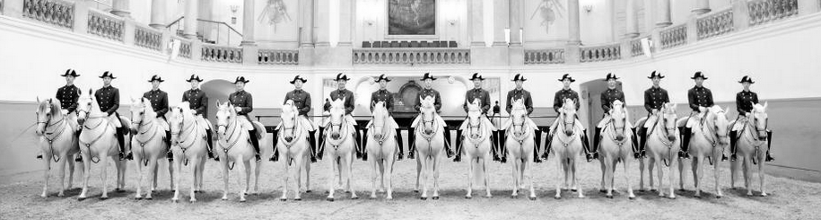

Aufgabe 1.5
11 Lipizzaner-Schimmelhengste stehen mit ihren Reitern in einer Reihe.

- Auf wie viele Arten können die Pferde in der Reihe stehen?
- Das Pferd des Hauptmanns soll immer in der Mitte stehen. Wie viele Anordnungen sind jetzt möglich?
- Wie viele Anordnungen sind
möglich, wenn nur die Pferde
auf der linken bzw. rechten Seite des Hauptmannpferdes ihre Plätze wechseln können?
- Bei (a): Wie viele Möglichkeiten gibt es, n verschiedene Objekte anzuordnen?
- Bei (b): Wenn eine Position fest ist, wie viele Positionen bleiben für die anderen?
- Bei (c): Können Sie das Problem in zwei unabhängige Teilprobleme aufteilen?
- Nutzen Sie das Multiplikationsprinzip für unabhängige Entscheidungen
Teil (a): Alle Pferde können beliebig stehen
Wir haben 11 unterscheidbare Pferde, die in einer Reihe angeordnet werden sollen. Dies ist eine klassische Permutation von 11 Elementen.
Die Anzahl der Permutationen von $n$ verschiedenen Objekten ist $n!$.
Für 11 Pferde: $$11! = 11 \cdot 10 \cdot 9 \cdot 8 \cdot 7 \cdot 6 \cdot 5 \cdot 4 \cdot 3 \cdot 2 \cdot 1 = 39'916'800$$
Es gibt also fast 40 Millionen verschiedene Anordnungen!
Teil (b): Hauptmannspferd steht in der Mitte
Bei 11 Pferden ist die mittlere Position die 6. Position (5 links, 5 rechts).
Wenn das Hauptmannspferd fest auf Position 6 steht:
- Diese Position ist besetzt → keine Wahl mehr
- Die restlichen 10 Pferde können auf die verbleibenden 10 Positionen verteilt werden
- Das ist eine Permutation von 10 Elementen
$$10! = 10 \cdot 9 \cdot 8 \cdot 7 \cdot 6 \cdot 5 \cdot 4 \cdot 3 \cdot 2 \cdot 1 = 3'628'800$$
Teil (c): Nur Seitenwechsel innerhalb der Hälften
Das Hauptmannspferd steht wieder in der Mitte. Die anderen Pferde sind in zwei Gruppen aufgeteilt:
Die Bedingung bedeutet:
- Die 5 Pferde links vom Hauptmann können nur untereinander die Plätze tauschen
- Die 5 Pferde rechts vom Hauptmann können nur untereinander die Plätze tauschen
- Kein Pferd kann von links nach rechts (oder umgekehrt) wechseln
Nach dem Zählprinzip (Multiplikationsregel für unabhängige Ereignisse):
- Anordnungen der linken 5 Pferde: $5! = 120$
- Anordnungen der rechten 5 Pferde: $5! = 120$
- Gesamtzahl: $5! \cdot 5! = 120 \cdot 120 = 14'400$